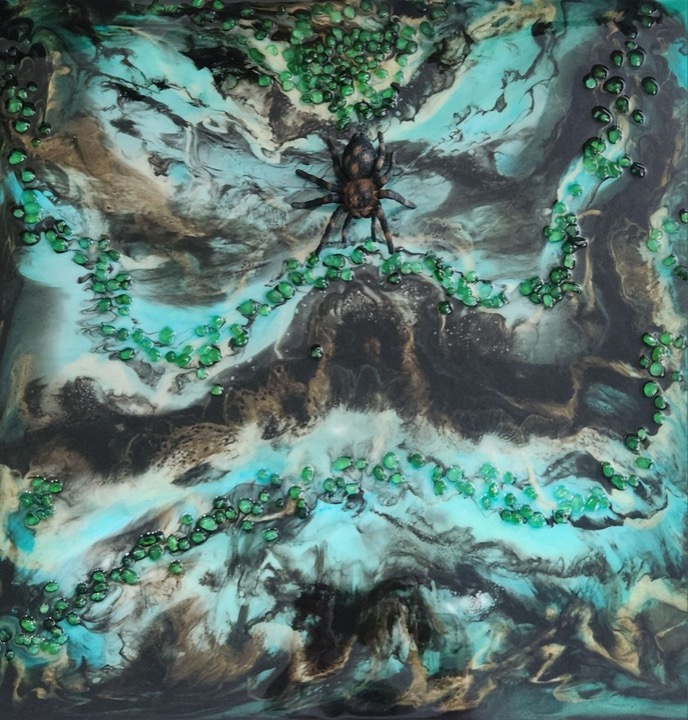
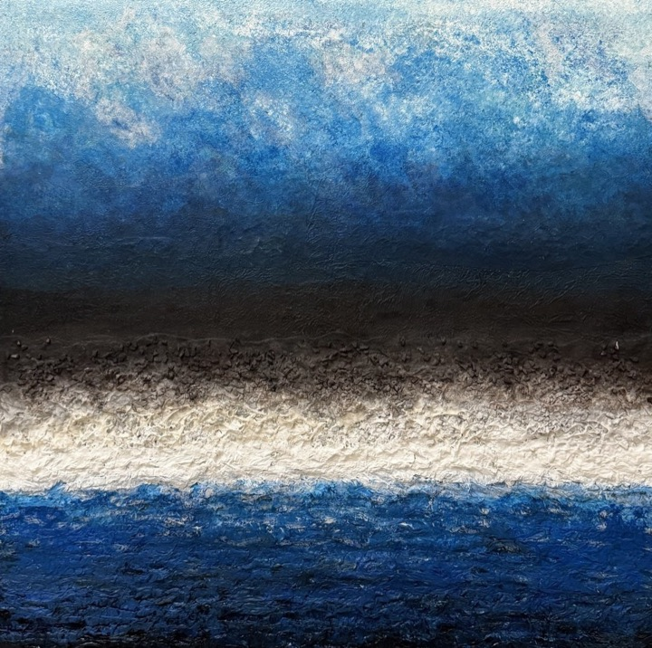
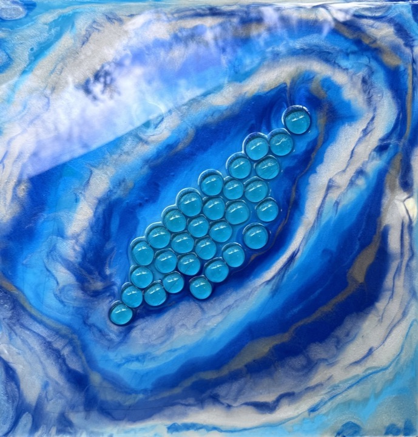
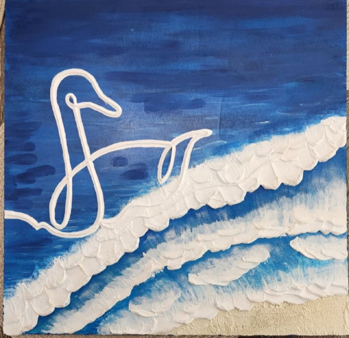
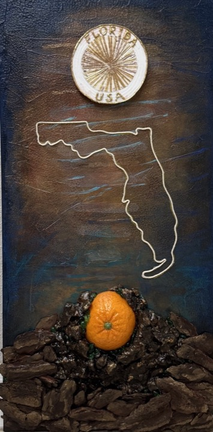

Pictures of Florida


Everglades
This place enchants me with the beauty of its greens, but it is also where fear makes me uneasy. The dark waters of the swamps, the countless alligators, and the mosquitoes make me think of Florida's Indigenous people, who were driven from their fertile lands into the cold, damp swamp jungles. These resilient warriors refused to submit, survived, and made these impenetrable places their home and their protection.



Hurricane
Florida is beautiful with its beaches, ocean, and lush greenery. Yet the anticipation of an approaching hurricane changes our very sense of land as a place of stability, and a sunny paradise becomes a threat to life.
A hurricane cannot make Florida less appealing or destroy our love for the beautiful peninsula of flowers, but it reminds us that nature is more powerful than we are and that we need to stay strong, ready at any moment to fight.



The Clarity of the Stream
On the blue surface, raised circles catch the light, and pale bands recall Florida's clear streams and lakes, where we seek relief from the heat on a hot day. Florida's lakes beckon, but their coolness is as deceptive as a painted picture. If the water in a Florida lake is wet, there are alligators in it, and swimming is prohibited.



The Queen's Gift
The white swan represents the anticipation of bright and pleasant moments in life. Swans were brought to Florida as a gift from Britain's Queen Elizabeth II, who presented them to the city of Lakeland in 1957. The city is now unofficially known as Swan City, and swans are its main symbol.



When Will the Gardens Bloom?
Florida's orange harvests are shrinking rapidly. Disease and urbanization are to blame. The painting raises the question of the disappearance of Florida's orange groves, but also reflects the hope that a brave orange will break through the stones, sod, and asphalt to reach the sun again.
The orange rises above the surface of the painting, and next to the dark sod it retains the brightness of a real fruit. Above it, cotton cord outlines Florida. The entire state fits inside the outline, yet the eye still returns to the orange.